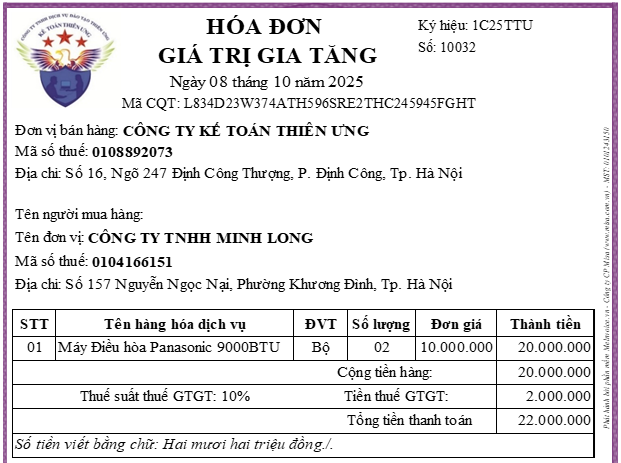
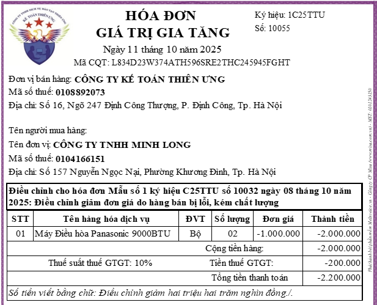

Hướng dẫn cách hạch toán giảm giá hàng bán đối với bên mua, bên bán theo thông tư 99/2025/TT-BTC và thông tư 133/2016/TT-BTC
Giảm giá hàng bán là khoản giảm trừ cho người mua do sản phẩm, hàng hoá kém, mất phẩm chất hay không đúng quy cách theo quy định trong hợp đồng kinh tế.
1. Cách hạch toán giảm giá hàng bán đối với bên mua:
+ Trường hợp 1: Khoản giảm giá hàng bán nhận được ngay khi mua hàng tồn kho thì sẽ ghi nhận giá trị hàng tồn kho theo giá đã được giảm
Ví dụ: Công ty A bán 1 chiếc ghế giám đốc
+ Giá niêm yết: 5.000.000 (chưa VAT 8%)
+ Nhưng do da ghế bị xước nên giảm 1.000.000đ (đã giảm trừ trực tiếp lên hoá đơn)
+ Nhưng do da ghế bị xước nên giảm 1.000.000đ (đã giảm trừ trực tiếp lên hoá đơn)
=> Bên mua khi nhận hoá đơn sẽ hạch toán ghi nhận giá trị hàng mua theo giá đã giảm là: 4.000.000đ
Nợ 153: 4.000.000đ (Do bên mua mua về làm công cụ dụng có và có nhập kho)
Nợ 133: 320.000 (Thuế GTGT 8%)
Nợ 112: 4.320.000 (Vì đã thanh toán bằng tiền gửi ngân hàng)
Nợ 112: 4.320.000 (Vì đã thanh toán bằng tiền gửi ngân hàng)
+ Trường hợp 2: Khoản giảm giá hàng bán nhận được sau khi mua hàng tồn kho thì kế toán phải căn cứ vào tình hình biến động của hàng tồn kho để phân bổ khoản giảm giá hàng bán được hưởng dựa trên số hàng tồn kho còn tồn kho, số đã xuất dùng cho sản xuất sản phẩm hoặc cho hoạt động đầu tư xây dựng hoặc đã xác định là tiêu thụ trong kỳ
Tiêu thức phân bổ: số lượng hoặc giá trị như phân bổ chi phí mua hàng, hoặc có thể căn cứ theo quy định về điều kiện giảm giá trong quy chế bán hàng của người bán để lựa chọn tiêu thức phân bổ phù hợp.
Cả thông tư 133 và Thông tư 99 đều yêu cầu kế toán phải phân bổ:
+ Nếu hàng tồn kho còn tồn trong kho thì ghi giảm giá trị hàng tồn kho:
+ Nếu hàng tồn kho còn tồn trong kho thì ghi giảm giá trị hàng tồn kho:
Hạch toán ghi: Có TK 152, 153, 156
+ Nếu hàng tồn kho đã bán thì ghi giảm giá vốn hàng bán;
Hạch toán ghi : Có TK 632
+ Nếu hàng tồn kho đã xuất dùng cho sản xuất thì ghi giảm chi phí tương ứng khi xuất dùng:
Hạch toán ghi: Có TK 621, 623, 627, 154 (Thông tư 133 sử dụng TK 154)
+ Nếu hàng tồn kho xuất dùng cho hoạt động bán hàng, quản lý
Hạch toán ghi : Có TK 641, 642 (Thông tư 133 sử dụng TK 6421, 6422)
+ Nếu hàng tồn kho đã sử dụng cho hoạt động xây dựng cơ bản thì ghi giảm chi phí xây dựng cơ bản.
Hạch toán ghi: Có TK 241 - Xây dựng cơ bản dở dang
Cụ thể cách hạch toán từng bút toán trong trường hợp 2 như sau:
* Mua nguyên vật liệu được giảm giá hàng bán
Trường hợp khoản giảm giá hàng bán nhận được sau khi mua nguyên, vật liệu (kể cả các khoản tiền phạt vi phạm hợp đồng kinh tế về bản chất làm giảm giá trị bên mua phải thanh toán) thì kế toán phải căn cứ vào tình hình biến động của nguyên vật liệu để phân bổ số chiết khấu thương mại, giảm giá hàng bán được hưởng dựa trên số nguyên vật liệu còn tồn kho, số đã xuất dùng cho sản xuất sản phẩm hoặc cho hoạt động đầu tư xây dựng hoặc đã xác định là tiêu thụ trong kỳ:
Nợ các TK 111, 112, 331,....
Có TK 152 - Nguyên liệu, vật liệu (nếu NVL còn tồn kho)
Có các TK 621, 623, 627, 154 (nếu NVL đã xuất dùng cho sản xuất)
Có TK 241 - Xây dựng cơ bản dở dang (nếu NVL đã xuất dùng cho hoạt động đầu tư xây dựng)
Có TK 632 - Giá vốn hàng bán (nếu sản phẩm do NVL đó cấu thành đã được xác định là tiêu thụ trong kỳ)
Có các TK 641, 642 (NVL dùng cho hoạt động bán hàng, quản lý)
Có TK 133 - Thuế GTGT được khấu trừ (1331) (nếu có).
Trường hợp sau khi đã xuất kho nguyên vật liệu đưa vào sản xuất, nếu nhận được khoản giảm giá hàng bán (kể cả các khoản tiền phạt vi phạm hợp đồng kinh tế về bản chất làm giảm giá trị bên mua phải thanh toán) liên quan đến nguyên vật liệu đó, kế toán ghi giảm chi phí sản xuất kinh doanh dở dang đối với phần giảm giá hàng bán được hưởng tương ứng với số NVL đã xuất dùng để sản xuất sản phẩm dở dang:
Nợ các TK 111, 112, 331,....
Có TK 154 - Chi phí sản xuất kinh doanh dở dang (phần giảm giá hàng bán được hưởng tương ứng với số NVL đã xuất dùng để sản xuất sản phẩm dở dang)
Có TK 133 - Thuế GTGT được khấu trừ (1331) (nếu có).
* Mua công cụ dụng cụ được giảm giá hàng bán
Trường hợp khoản giảm giá nhận được sau khi mua công cụ, dụng cụ thì doanh nghiệp phải căn cứ vào tình hình biến động của công cụ, dụng cụ để phân bổ số giảm giá hàng bán được hưởng cho số công cụ, dụng cụ còn tồn kho hoặc số đã xuất dùng cho hoạt động sản xuất kinh doanh, ghi:
Nợ các TK 111, 112, 331,...
Có TK 153 - Công cụ, dụng cụ (nếu công cụ, dụng cụ còn tồn kho)
Có TK 154 - Chi phí SXKD dở dang (nếu công cụ, dụng cụ đã xuất dùng cho sản xuất kinh doanh)
Có các TK 641, 642 (nếu công cụ, dụng cụ đã xuất dùng cho hoạt động bán hàng, quản lý doanh nghiệp)
Có TK 242 - Chi phí chờ phân bổ (nếu được phân bổ dần)
Có TK 632 - Giá vốn hàng bán (nếu sản phẩm do công cụ, dụng cụ đó cấu thành đã được xác định là tiêu thụ trong kỳ)
Có TK 133 - Thuế GTGT được khấu trừ (1331) (nếu có).
* Mua hàng hoá được giảm giá hàng bán
Trường hợp doanh nghiệp được nhận khoản giảm giá sau khi mua hàng thì doanh nghiệp phải căn cứ vào tình hình biến động của hàng hóa để phân bổ số giảm giá hàng bán được hưởng dựa trên số hàng còn tồn kho, số đã xuất bán trong kỳ:
Nợ các TK 111, 112, 331,...
Có TK 156 - Hàng hóa (nếu hàng còn tồn kho)
Có TK 632 - Giá vốn hàng bán (nếu đã tiêu thụ trong kỳ)
Có TK 133 - Thuế GTGT được khấu trừ (1331) (nếu có).
2. Cách hạch toán giảm giá hàng bán đối với bên bán:
2.1. Đối với các doanh nghiệp áp dụng chế độ kế toán theo Thông tư 133/2016/TT-BTC thì:
- Thông tư 133 không có tài khoản 521
- Khi phát sinh giảm giá hàng bán sẽ hạch toán trực tiếp vào bên Nợ của tài khoản 511
Tài khoản sử dụng: TÀI KHOẢN 521 - CÁC KHOẢN GIẢM TRỪ DOANH THU
Doanh nghiệp có thể mở thêm các tài khoản chi tiết các khoản giảm trừ doanh thu phát sinh (như: Chiết khấu thương mại, Giảm giá hàng bán, Hàng bán bị trả lại...) cho phù hợp với đặc điểm hoạt động sản xuất, kinh doanh và yêu cầu quản lý của đơn vị mình.
Ví dụ như: mở TK chi tiết cấp 2 là Tài khoản 5213 - Giảm giá hàng bán: Tài khoản này dùng để phản ánh khoản giảm giá hàng bán cho người mua do sản phẩm hàng hóa dịch vụ cung cấp kém quy cách nhưng chưa được phản ánh trên hóa đơn khi bán sản phẩm hàng hóa, cung cấp dịch vụ trong kỳ
Bên bán hàng thực hiện kế toán giảm giá hàng bán theo những nguyên tắc kế toán của TK 521 tại Thông tư 99 sau:
1. Nguyên tắc kế toán
a) Tài khoản này dùng để phản ánh các khoản được điều chỉnh giảm trừ vào doanh thu bán hàng và cung cấp dịch vụ phát sinh trong kỳ, bao gồm: chiết khấu thương mại, giảm giá hàng bán và hàng bán bị trả lại. Tài khoản này không phản ánh các khoản thuế được giảm trừ vào doanh thu như thuế GTGT đầu ra phải nộp tính theo phương pháp trực tiếp.
b) Việc điều chỉnh giảm doanh thu được thực hiện như sau:
- Khoản chiết khấu thương mại, giảm giá hàng bán, hàng bán bị trả lại phát sinh cùng kỳ tiêu thụ sản phẩm, hàng hóa dịch vụ được điều chỉnh giảm doanh thu của kỳ phát sinh;
- Trường hợp sản phẩm, hàng hóa, dịch vụ đã tiêu thụ từ các kỳ trước, đến kỳ sau mới phát sinh chiết khấu thương mại, giảm giá hàng bán hoặc hàng bán bị trả lại thì doanh nghiệp ghi giảm doanh thu theo nguyên tắc:
+ Nếu sản phẩm, hàng hóa, dịch vụ đã tiêu thụ từ các kỳ trước, đến kỳ sau phải giảm giá, phải chiết khấu thương mại, bị trả lại nhưng phát sinh trước thời điểm phát hành Báo cáo tài chính, kế toán phải coi đây là một sự kiện cần điều chỉnh phát sinh sau ngày lập Báo cáo tài chính và ghi giảm doanh thu, trên Báo cáo tài chính của kỳ lập báo cáo (kỳ trước).
+ Trường hợp sản phẩm, hàng hóa, dịch vụ đã tiêu thụ từ các kỳ trước, đến kỳ sau phải giảm giá, phải chiết khấu thương mại, bị trả lại sau thời điểm phát hành Báo cáo tài chính thì doanh nghiệp ghi giảm doanh thu của kỳ phát sinh (kỳ sau).
..........
d) Giảm giá hàng bán là khoản giảm giá so với giá bán niêm yết cho khách hàng do sản phẩm, hàng hóa kém, mất phẩm chất, không đúng quy cách,… theo quy định trong hợp đồng kinh tế. Bên bán hàng thực hiện kế toán giảm giá hàng bán theo những nguyên tắc sau:
- Trường hợp trong hóa đơn GTGT hoặc hóa đơn bán hàng đã thể hiện khoản giảm giá hàng bán cho người mua là khoản giảm trừ vào số tiền người mua phải thanh toán (giá bán phản ánh trên hóa đơn là giá đã giảm) thì doanh nghiệp (bên bán hàng) không sử dụng tài khoản này, doanh thu bán hàng phản ánh theo giá đã giảm (doanh thu thuần).
- Chỉ phản ánh vào tài khoản này các khoản giảm trừ do việc chấp thuận giảm giá sau khi đã bán hàng (đã ghi nhận doanh thu) và phát hành hóa đơn (giảm giá ngoài hóa đơn).
đ) Đối với hàng bán bị trả lại, tài khoản này dùng để phản ánh giá trị của số sản phẩm, hàng hóa bị khách hàng trả lại do các nguyên nhân: Vi phạm cam kết, vi phạm hợp đồng kinh tế, hàng bị kém, mất phẩm chất, không đúng chủng loại, quy cách,...
e) Kế toán phải theo dõi chi tiết chiết khấu thương mại, giảm giá hàng bán, hàng bán bị trả lại cho từng khách hàng và từng loại hàng bán, như: bán hàng (sản phẩm, hàng hóa), cung cấp dịch vụ. Cuối kỳ, kết chuyển toàn bộ sang tài khoản 511 - Doanh thu bán hàng và cung cấp dịch vụ để xác định doanh thu thuần của khối lượng sản phẩm, hàng hóa, dịch vụ thực tế thực hiện trong kỳ báo cáo.
Lưu ý:
Trường hợp xuất hàng tồn kho để khuyến mại, quảng cáo nhưng khách hàng chỉ được nhận hàng khuyến mại, quảng cáo kèm theo các điều kiện khác như phải mua sản phẩm, hàng hóa (ví dụ như mua 2 sản phẩm được tặng 1 sản phẩm...) thì doanh nghiệp phải phân bổ số tiền hoặc lợi ích thu được để tính doanh thu cho cả hàng bán và hàng khuyến mại. Theo đó, giá trị hàng khuyến mại được tính vào giá vốn hàng bán (trường hợp này bản chất giao dịch là giảm giá hàng bán).
Lưu ý:
Trường hợp xuất hàng tồn kho để khuyến mại, quảng cáo nhưng khách hàng chỉ được nhận hàng khuyến mại, quảng cáo kèm theo các điều kiện khác như phải mua sản phẩm, hàng hóa (ví dụ như mua 2 sản phẩm được tặng 1 sản phẩm...) thì doanh nghiệp phải phân bổ số tiền hoặc lợi ích thu được để tính doanh thu cho cả hàng bán và hàng khuyến mại. Theo đó, giá trị hàng khuyến mại được tính vào giá vốn hàng bán (trường hợp này bản chất giao dịch là giảm giá hàng bán).
Doanh thu phải được ghi nhận phù hợp với bản chất hơn là hình thức hoặc tên gọi của giao dịch và phải được phân bổ theo nghĩa vụ cung ứng hàng hóa, dịch vụ. Ví dụ khách hàng chỉ được nhận hàng khuyến mại khi mua sản phẩm hàng hóa, dịch vụ của đơn vị (như mua 2 sản phẩm được tặng thêm một sản phẩm) thì bản chất giao dịch là giảm giá hàng bán, sản phẩm, tặng miễn phí cho khách hàng về hình thức được gọi là khuyến mại nhưng về bản chất là bán vì khách hàng sẽ không được hưởng nếu không mua sản phẩm, dịch vụ. Trường hợp này giá trị sản phẩm, dịch vụ tặng cho khách hàng được phản ánh vào giá vốn và doanh thu tương ứng với giá trị hợp lý của sản phẩm, dịch vụ đó phải được ghi nhận. Doanh nghiệp phải phân bổ giá giao dịch cho cả sản phẩm, dịch vụ bán và sản phẩm, dịch vụ miễn phí trên cơ sở giá bán đơn lẻ của từng loại sản phẩm, dịch vụ làm cơ sở xác định doanh thu của từng sản phẩm; giá trị sản phẩm miễn phí được phản ánh vào giá vốn hàng bán. Tuy nhiên, nguyên tắc này có thể ngoại lệ đối với trường hợp doanh nghiệp tặng hàng hóa, dịch vụ miễn phí cho khách hàng mà theo đặc điểm mô hình kinh doanh, giá bán hàng hóa, dịch vụ chính của doanh nghiệp không thay đổi cho dù khách hàng có nhận hay không nhận hàng hóa, dịch vụ tặng kèm thì doanh nghiệp ghi nhận giá trị hàng hóa, dịch vụ tặng kèm cho khách hàng vào chi phí bán hàng của doanh nghiệp tương tự trường hợp khuyến mại không kèm theo điều kiện.
Cụ thể cách hạch toán giảm giá hàng bán trong từng trường hợp như sau:
* Trường hợp 1: Trường hợp trên hóa đơn đã thể hiện khoản giảm giá hàng bán cho người mua là khoản giảm trừ vào số tiền người mua phải thanh toán (giá bán phản ánh trên hoá đơn là giá đã giảm) thì:
+ Bên bán hàng không sử dụng tài khoản 521 để hạch toán (không cần phải theo dõi, hạch toán riêng khoản giảm giá hàng bán trong trường hợp này)
+ Doanh thu bán hàng phản ánh theo giá đã giảm (doanh thu thuần).
Nhưng do vỏ tủ lạnh bị trầy xước nên được giảm giá 1.000.000đ
=> Khi có khách mua, bên bán sẽ xuất hóa đơn ghi giá đã giảm là: 10.000.000đ, tiền thuế 8% là 800.000đ, tổng thanh toán là: 10.800.000đ
Bên mua đã thanh toán bằng tiền gửi ngâng hàng (chuyển khoản).=> Khi có khách mua, bên bán sẽ xuất hóa đơn ghi giá đã giảm là: 10.000.000đ, tiền thuế 8% là 800.000đ, tổng thanh toán là: 10.800.000đ
| Bên Bán | Bên Mua (mua hàng hóa) | ||
|
Bút toán 1: Ghi nhận doanh thu bán hàng
Nợ TK 511: 10.000.000
Có TK 3331: 800.000
Có TK 112: 10.8000.000 Bút toán 2: Ghi nhận giá vốn bán hàng
(Đối với những doanh nghiệp tính giá xuất kho theo PP bình quân gia quyền nên đến cuối tháng mới tính được đơn giá xuất kho => Khi đó mới tính được trị giá xuất kho để hạch toán cho bút toán này) |
Nợ TK 156: 10.000.000
Nợ TK 133: 800.000
Có TK 112: 10.800.000
|
* Trường hợp 2: Trường hợp sau khi đã bán hàng (đã ghi nhận doanh thu) bên bán chấp thuận giảm giá do hàng bán kém, mất phẩm chất...
=> Bên bán phát hành hoá đơn điều chỉnh giảm để giảm giá cho số hàng đã bán
Bên Bán, bên Mua căn cứ vào Hóa đơn điều chỉnh giảm, hạch toán:
* Bên bán hạch toán:
| Theo TT 99/2025TT-BTC | Theo TT 133/2016/TT-BTC |
|
Khi thực hiện giảm giá thì: Ghi tăng khoản giảm giá hàng bán: Nợ TK 521: Khoản giảm giá cho người mua (chưa có thuế GTGT) Nợ TK 3331: Số tiền thuế GTGT của khoản giảm giá (Nếu có)
Có TK 111/112/131: Tổng số tiền giảm giá
Đến cuối kỳ kế toán, kết chuyển tổng số giảm trừ doanh thu là giảm giá hàng bán đã phát sinh trong kỳ sang tài khoản 511 - “Doanh thu bán hàng và cung cấp dịch vụ”, ghi:
Nợ TK 511 - Doanh thu bán hàng và cung cấp dịch vụ
Có TK 521 - giảm giá hàng bán.
|
Ghi tăng khoản giảm giá hàng bán: Nợ TK 511: Khoản giảm giá cho người mua (chưa có thuế GTGT) Nợ TK 3331: Số tiền thuế GTGT của khoản giảm giá (Nếu có)
Có TK 111/112/131: Tổng số tiền giảm giá
|
Ví dụ: Ngày 08/10/2026, công ty Diệu Tâm bán hàng hoá cho Công ty Minh Long, xuất hoá đơn GTGT như sau:

Căn cứ vào hóa đơn số 10032 ngày 08/10/206 và chứng từ thanh toán chuyển khoản, các bên hạch toán:
|
Bên Bán (Công ty Diệu Tâm - Bán hàng hoá) |
Bên Mua (Công ty Minh Long - Mua hàng hóa) |
||
|
Bút toán 1: Ghi nhận doanh thu bán hàng
Nợ TK 1121: 22.000.000
Có TK 511: 20.000.000
Có TK 3331: 2.000.000
|
Nợ TK 156: 20.000.0000
Nợ TK 133: 2.000.000
Có TK 1121: 22.000.000
|
Ngày 11/10/2026 Công ty Minh Long phát hiện ra cả 2 bộ máy điều hòa đều bị lỗi => đã thông báo cho Công ty Diệu Tâm.
Sau khi kiểm tra lại kết luận hàng bị lỗi, hai bên thống nhất:
1. Lập Biên bản xác nhận hàng bị lỗi, quyết định: Giảm đơn giá của cả 2 bộ Máy Điều hòa Panasonic 9000BTU, cụ thể: giảm 1.000.000đ/bộ trên giá chưa VAT
2. Bên bán – Công Ty Diệu Tâm lập hoá đơn điều chỉnh giảm đơn giá cho hàng bị lỗi:

1.3 Công ty Diệu Tâm đã chuyển khoản thanh toán khoản giảm giá hàng bán này cho bên mua tại ngày 11/10/2026
Bên bán là công ty Diệu Tâm (áp dụng chế độ kế toán theo thông tư 99) hạch toán hoá đơn giảm giá hàng bán như sau:
Tại ngày 11/10/2026, Căn cứ vào hoá đơn điều chỉnh giảm số 10055 để hạch toán khoản giảm giá hàng bán như sau:
Nợ TK 521: 2.000.000
Nợ TK 3331: 200.000
Có TK 112: 2.200.000
Đến cuối kỳ kế toán, kết chuyển khoản giảm giá hàng bán đã phát sinh này sang tài khoản 511 - “Doanh thu bán hàng và cung cấp dịch vụ” như sau:
Nợ TK 511: 2.000.000
Có TK 521: 2.000.000
(giảm giá hàng bán là 1 trong những khoản giảm trừ doanh thu nên sẽ hạch toán vào bên Nợ của TK 511)
Bên mua là công ty Minh Long hạch toán hoá đơn giảm giá hàng bán nhận được như sau:
Tình huống 1: Toàn bộ số hàng hóa đã mua được giám giá đều chưa bán, vẫn còn tồn kho
Nợ TK 112: 2.200.000
Có TK 133: 200.000
Có TK 156: 2.000.000
Có TK 156: 2.000.000
Tình huống 2: Toàn bộ số hàng hóa đã mua được giám giá đều đã bán, không còn tồn kho
Nợ TK 112: 2.200.000
Có TK 133: 200.000
Có TK 632: 2.000.000
Có TK 632: 2.000.000
Tình huống 3: Trong 2 bộ điều hoà đã mua được giám giá đó thì: 1 đã bán, 1 còn trong kho
Nợ TK 112: 2.200.000
Có TK 133: 200.000
Có TK 632: 1.000.000 (Phân bổ cho hàng đã bán)
Có TK 156: 1.000.000 (phân bổ cho hàng còn tồn trong kho)
Có TK 632: 1.000.000 (Phân bổ cho hàng đã bán)
Có TK 156: 1.000.000 (phân bổ cho hàng còn tồn trong kho)
Lưu ý: Đối với hàng hóa mua về nhập kho để bán thì sẽ có 1 trong 2 trạng thái:
+ Trạng thái 1: Hàng chưa bán => Đang ở trong kho => Đang được ghi trên sổ sách ở TK 156 (hàng tồn kho) => Đây là lý do vì sao mà khi hàng chưa bán sẽ giảm TK 156
+ Trạng thái 2: Hàng đã bán => Không còn ở trong kho => Giá trị hàng tồn kho xuất bán (TK 156) được chuyển thành giá vốn (Lúc này đang ghi nhận vào TK 632) (Ghi nhận ở bút toán giá vốn: Nợ TK 632/Có TK 156) => Đây là lý do vì sao mà khi hàng đã bán thì sẽ ghi giảm TK 632